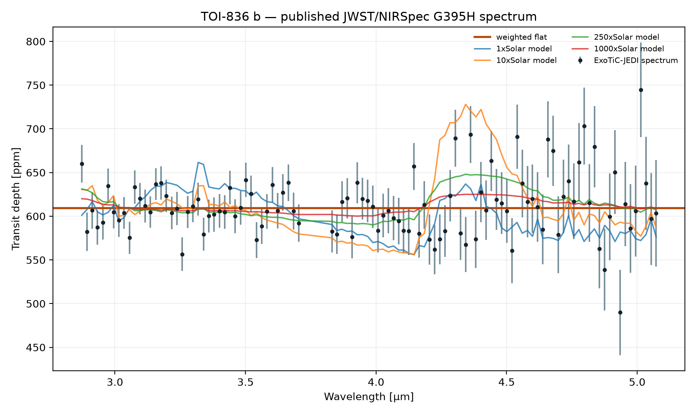
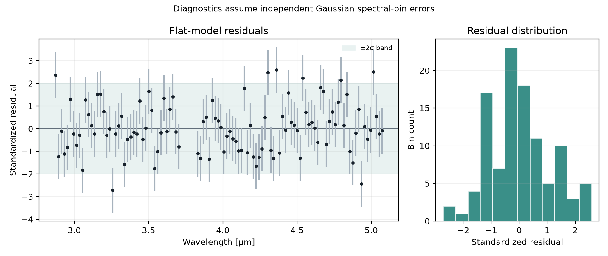

Data source notes
SHA-256, LF-normalised text
c416dc3d0c035de8ae3ee44d5affb0d7c320a2296ddb86ed1314267127c90f5fBrowse 14 versioned evidence files. Table previews simply display stored rows. Consult the project report for the source, processing steps, and inference assumptions.


c416dc3d0c035de8ae3ee44d5affb0d7c320a2296ddb86ed1314267127c90f5fd202f356385026c1fe7987653a175aaacc1b7810adfe9e824620f665ec151927| species | status | evidence | basis | source_label | source_url |
|---|---|---|---|---|---|
| H2-rich atmosphere | model space excluded | <250x solar excluded | for a 0.1-bar opaque pressure level | Alderson et al. 2024, JWST COMPASS | https://doi.org/10.3847/1538-3881/ad32c9 |
| H2O / CO2 / CO / CH4 | not detected | 2.8-5.2 micron spectrum | no resolved molecular feature | Alderson et al. 2024, JWST COMPASS | https://doi.org/10.3847/1538-3881/ad32c9 |
| O2 | no evidence | not constrained | flatness is not an oxygen detection | Alderson et al. 2024, JWST COMPASS | https://doi.org/10.3847/1538-3881/ad32c9 |
15cdff5afb844e00b10cf5a5ae503d4c91412772acb648e12169a656ffa2ea6e| pl_name | hostname | ra | dec | pl_orbper | pl_tranmid | pl_trandur |
|---|---|---|---|---|---|---|
| TOI-836 b | TOI-836 | 225.0798831 | -24.4542022 | 3.81673 | 2458599.9953 | 1.805 |
526c59bed93effd0f56fbc3fbcf779fe43f5f015636c54f3856080a8f04a49ef069dc0c0d0abf6ea9ae73ce2830ab940f933abf196752831fbba783d9dba41a7e3e256890f54c1c1c82511abeb59b28dc9c7fa49a3408a15d447931c605a80ea| quantity | value | unit |
|---|---|---|
| sector | 11 | TESS sector |
| period_days | 3.81673 | days; NASA Exoplanet Archive |
| published_duration_hours | 1.805 | hours; NASA Exoplanet Archive |
| a_over_rstar | 13.6456396992 | fixed from saved a and stellar radius |
cbe2a7857266ec9520a883c155d8538ca420dad7e9efd6ed693fc68a1a218eaf| assumption | flat_p | flat_reduced_chi2 | intrinsic_scatter_mle_ppm | loo_p_max | loo_p_median | loo_p_min |
|---|---|---|---|---|---|---|
| independent Gaussian wavelength-bin errors | 0.05994399866963856 | 1.2231240563449925 | 7.980156480248724 | 0.12276845140987648 | 0.056023373972016954 | 0.05238023526036997 |
2e83d8e106dc7413745f880b62179de1c7eca6f590f99bdc7df78098300a652e| chi2 | comparison | delta_chi2_vs_flat | dof | max_abs_standardized_residual | mean | n |
|---|---|---|---|---|---|---|
| 128.42802591622421 | weighted flat | 105 | 2.716914380744963 | 609.0669022508155 | 106 | |
| 230.65149745749656 | 1xSolar + fitted vertical offset | 102.22347154127235 | 105 | 106 | ||
| 311.6129313687149 | 10xSolar + fitted vertical offset | 183.18490545249068 | 105 | 106 | ||
| 154.6109680054254 | 250xSolar + fitted vertical offset | 26.18294208920119 | 105 | 106 |
4b20f0bb69404842daa2dc37c89bfcb2711315224b6d99d81f9004bfa4841a42| sector | filename | transit_events | n_points | transit_supported | delta_bic | timing_shift_hours |
|---|---|---|---|---|---|---|
| 11 | tess2019112060037-s0011-0000000440887364-0143-s_lc.fits | 4 | 1296 | True | 189.2256102 | -0.03488267879 |
| 38 | tess2021118034608-s0038-0000000440887364-0209-s_lc.fits | 7 | 2274 | True | 311.4810888 | -0.02605209351 |
4e4e3b1809d58879afc695038e94ec1181c1b1f1b01bec4d5a910ceb50bc42b9610b6c8004e0f7d8055d927c207c3f47862b5b9e6a89dfb1da5f23a64cb2b40227a66f45aa1b2f7eabc1e84b2669e5582db603f458e235f4fda48599146d019f9c1e2a8ae5a01ed189525230d651266c6978a7ad17f0e8353fa6fd9cdf87bcde68a056a7e1bac24210dc70c11f78b3fec75dc9e55251c4fd3096d6a8677522c0SHA-256 values verify the stored files. They do not independently validate the scientific analysis. Rebuild this page with python scripts/evidence_catalog.py followed by python scripts/render_evidence_page.py.